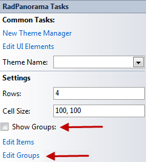
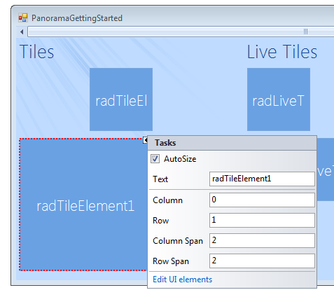

Design Time
RadPanorama supports adding and customizing tiles and groups at design time.
All customizations are introduced by the Smart Tag menu of the specified item.
The items available in the control Smart Tag are:
New Theme Manager – add new RadThemeManager component
Edit UI Elements – allows you to modify the control elements and their properties
Theme Name – allows you to set the theme for the control
Rows – define the number of rows that the control will have
Cell Size – define the size of each cell
Show Groups – shows the groups in the control (if any)
Edit Items – opens an editor, which allows you to add RadTileElements and RadLiveTileElements
Edit Groups – opens editor, which allows you to add groups to the control
Adding Tiles
In order to add or remove tiles either click on the “Edit items”
link in the smart tag menu or edit the Items collection in the
Properties window in Visual Studio. You can add two types of elements to the
Items collection: RadTileElement and
RadLiveTileElement.
Adding Groups
To add or remove groups click on the “Edit Groups” link in
the smart tag menu or edit the Groups collection in the
Properties window in Visual Studio. To add tiles to a group, edit the
Items collection of the group itself. Switching
between grouped or ungrouped view, is achieved by checking or unchecking the
ShowGroups checkbox in the smart tag menu or setting the
ShowGroups property in the Properties window in Visual Studio.

Customizing tiles
Each RadTileElement properties can be customized via the properties
window of Visual Studio, or via the Smart Tag menu. The available properties for
customization in the Smart Tag menu are:
Text – sets the text of the tile
Column – define in which column the item resides in
Row – define in which row the item resides in
Column Span – define the item lenght by specifying how many columns it should take
Row Span – define the item height by specifying how many rows it should take
Edit UI elements – allows you to edit the element’s properties 
Customizing Live Tiles
Each RadLiveTileElement properties can be customized via the
properties window of Visual Studio, or via the Smart Tag menu. The available
properties for customization in the Smart Tag menu are:
Text – sets the text of the tile
Column – define in which column the item resides in
Row – define in which row the item resides in
Column Span – define the item lenght by specifying how many columns it should take
Row Span – define the item height by specifying how many rows it should take
Open Live Tile Editor – opens the
Live Tile Editor
, where you can customize the tile.Edit UI elements – allows you to edit the element’s properties